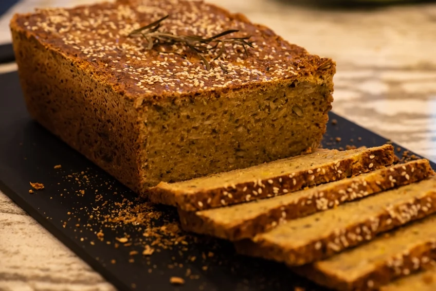

Sapiens Kitchen Grain-free, by design.
LE JOURNAL / KITCHEN NOTES
Grain-free, by design.
À la Sapiens.
Grains & grain products · The choices behind the menu.
THE SAPIENS KITCHEN
Grain-free, by design.
French technique, a different pantry. Our kitchen makes room for grain-free cooking without losing the pleasure of a beautifully prepared meal.
Our bakery uses alternatives such as root and tuber flours. The same attention to ingredients carries through the dinner menu. Ask the team about the ingredients in a particular dish and tell us about any allergies before ordering.
FROM THE ORIGINAL JOURNAL
Grains & grain products
Explore this topic in the restaurant’s original journal.